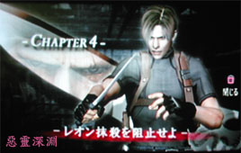
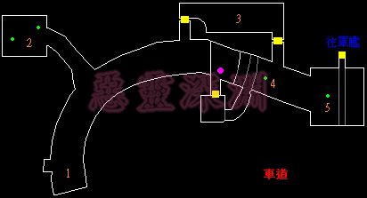
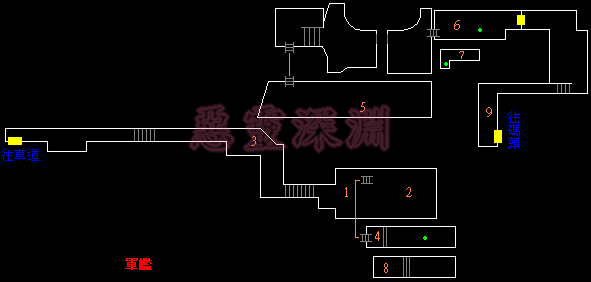
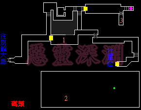
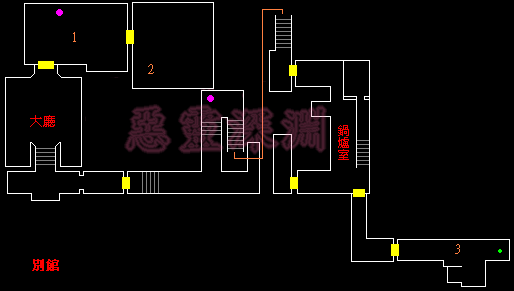

|
惡靈古堡∼惡靈古堡４----The Another Order─Chapter4
|
|
 阻止Leon被殺 地圖上的紫色圓點●表示高價寶物的位置，青色圓點●表示可以使用勾繩槍的位置，標綠色的道具則是過關必須的重要道具。
 在編號1開始的地方有武器商人，前進一點就會出現士兵了。編號2的房間有道具，有兩個可以使用勾繩槍的位置，除了拿道具之外 ，也可以順便在高處安全的解決敵人。 回到主通道上，因為中途路被障礙擋住了，只好繞編號3過去。在編號4的位置使用勾繩槍，就可以順著水管到障礙之中拿取高價寶 物金の聖猫像（金的聖貓像），要出來時只要攀爬障礙跳下來就可以直接回到主通道上。 在編號5附近使用勾繩槍，往軍艦。
 軍艦區看似平靜，但是當玩家走到編號1時，對岸就會出現三座炮台還有一群士兵，玩家首先要確保避開三座炮台的攻擊範圍，再 來解決士兵，建議一開始可以接近爬梯附近，然後用散彈槍迅速擊倒士兵，不要讓他們擴散開來。然後到編號2拿取重要的啟動鑰 匙（B），將鑰匙用在編號3的砲台，用這座砲台將三座敵方砲台擊破，擊破後這個砲台也不能用了，中央的運輸輪啟動。 在編號4可以搭乘運輸輪到對岸的編號5，繼續前進到編號6時，又升起了五座砲台，而且其中一座近在眼前擋住了去路。趕緊使用 勾繩槍往上道編號7，拿取啟動鑰匙（R），並在此使用勾繩槍回到對岸的編號8，利用鑰匙操作砲台，必須擊破五個砲台， 在擊破 第一個砲台之後時間開始倒數三分鐘，三分鐘之內必須擊破 其他砲台，並且回到編號6開門離開。攻擊砲台的時候，可以依據是否 有金屬聲來判斷有沒有擊中，另外也可以觀察敵方射來的彈藥的方向來尋找砲台位置。 擊破砲台之後，趕緊往下降，搭乘運輸輪回到編號6，開門後軍艦就沉沒了。到編號9找武器商人整理裝備，然後往碼頭。
 碼頭區沒有什麼重點，只是要通過這裡往別館大廳。但是行經到編號1時，發現前方的門被反鎖了，只好從附近沒有欄杆的地方落 下到編號2，再從另一邊使用勾繩槍到編號3。編號3附近有高價寶物審判の光＿緑（審判之光＿綠）。前進的道路很單純，只需小 心士兵即可。往別館大廳。
 又回到玩家熟悉的大廳了，從這裡回到編號1拿高價寶物信義の光＿赤（信義之光＿紅），回到編號1也可以拿到黃色藥草。 前進到鍋爐室的中途有高價寶物背信の光＿青（背信之光＿藍）， 鍋爐室會碰到幾個士兵，再前進到編號3時，就會聽到Leon和 Krauser打鬥的聲音，由於升降梯已經被Leon搭乘走了，所以只 好在地圖上標示的綠色圓點處使用勾繩槍，上去之後依照指示按下複 合按鍵開槍救援Leon。本章結束。
疑難解答
審判の光＿緑（審判之光＿綠） 3500ptas 信義の光＿赤（信義之光＿紅） 3500ptas 背信の光＿青（背信之光＿藍） 3500ptas 組合──金的聖貓像 ＋ 信義之光＿紅 ＋ 審判之光＿綠 ＋ 背信之光＿藍 ＝ 金の聖猫像＋赤＋緑＋青（金的聖貓像＿紅綠藍） 35000ptas 未經許可禁止轉載連結 |
惡靈深淵Biohazard Abyss http://98.to/coolbio